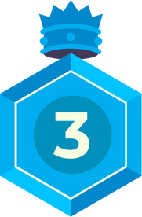
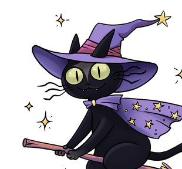

Цветной силиконовый браслет (зависит от выбора расы: зелёный, серый, оранжевый или фиолетовый)
Вход на фестиваль:
В 12:00
Зрительская зона ШОУ:
Танцевальный партер
ПРивелегии:
Участие в квесте «Волшебные миры»
Билет lvl 2
Вид билета
Лепрекон
Мерч:
Желтый силиконовый браслет
Вход на фестиваль:
Ранний вход в 11:00
Зрительская зона ШОУ:
Фан-зона
ПРивелегии:
Проход без очереди на 2 любые активности
Билет lvl 3
Вид билета
Волшебник

Мерч:
Эксклюзивный значок-пин
Вход на фестиваль:
Ранний вход в 11:00
Зрительская зона ШОУ:
Фан-зона
ПРивелегии:
Посещение 2х любых автограф-сессий
Скидка 5% у партнёров фестиваля на ярмарке и фудкорте в течение всего мероприятия
Бронирование мест в фандомном лектории на любой мастер-класс или лекцию онлайн
Билет lvl 4
Вид билета
Могущественный волшебник
Мерч:
Эксклюзивный набор фестивального мерча и подарок от титульного партнёра фестиваля
Вход на фестиваль:
Ранний вход в 11:00
Зрительская зона ШОУ:
Фан-зона
ПРивелегии:
Посещение всех автограф-сессий
Скидка 5% у партнёров фестиваля на ярмарке и фудкорте в течение всего мероприятия
Бронирование мест в фандомном лектории на любой мастер-класс или лекцию онлайн
Детский билет (до 14 лет)*
Вид билета
Хоббит

Мерч:
Разноцветный силиконовый браслет
Вход на фестиваль:
Как в билете родителя/опекуна
Зрительская зона ШОУ:
Как в билете родителя/опекуна
*Лица в возрасте до 14 лет могут посетить фестиваль ТОЛЬКО в сопровождении родителя/опекуна
Билеты на автограф‑сессию и правила посещения
Автограф-сессия проходит на территории фестиваля «Фандом Балкон». Посещение автограф‑сессии возможно только при приобретении входного билета на фестиваль!
Доступ на сессию по билету возможен только один раз и только для одного человека, который предъявит электронный билет первым. Не допускайте копирование электронного билета!
В рамках посещения автограф‑сессии обладателю билета выдается только один автограф.
Постер для автографа с изображением артиста будет предоставлен организаторами перед входом на стенд автограф‑сессий. Обладатель билета может принести с собой другой постер, однако артист в праве отказаться от автографа на постере посетителя.
В этом случае организаторы предоставляют постер с изображением артиста для автографа.